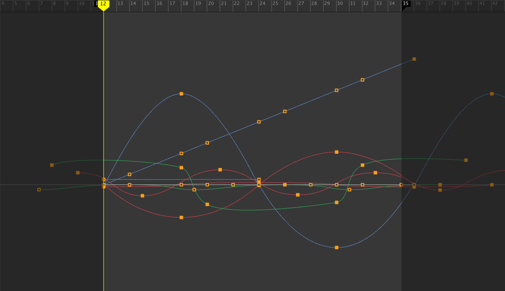

"Special Order"
Fall 2019 UCBUGG animated short film by Wyatt Hollister (Director), Ethan Buttimer (Project Manager), and Brian Lo. Created in Maya and Adobe After Effects.

Pre-Production
This is a character sketch used to guide the modeling of the aliens in MAYA. For this first stage of the animation pipeline, I also used Adobe Premiere Pro to assemble an initial animatic video with sounds effects and static storyboard drawings.

Modeling and Rigging
I modeled the meshes for the alien characters, as well as assets including the clipboard, cacti, buttes, and tree. I sculpted the alien’s head in Mudbox, then constructed a high-fidelity face mesh using MAYA’s “Quad Draw” tool. I also built a skeleton and controller rig to be used in the animation of the full body, and created “Blend Shapes” to facilitate animations of facial expressions.

Shading
The aliens were shaded and textured in Substance Painter. I shaded several other assets using a combination of Renderman “PxrSurfaces” and UV-maps via Substance Painter and Photoshop.
Animation
I created the animations of the truck stopping in the desert, the delivery man grabbing the package, and a walk cycle leading to him handing the package off to the aliens. I also animated several alien shots, including the mechanical part being grabbed and lifted out of the package, as well as facial expressions and eye motion.

Lighting and Post-Production
The atmosphere of a desert at dusk was achieved through various Renderman lights, as well as compositing of renders onto some beautiful matte backgrounds, painted by Brian Lo. Dust, smoke, and abduction effects were also composited in Adobe After Effects. Finally, I edited the sound design to match the final cut of the movie.